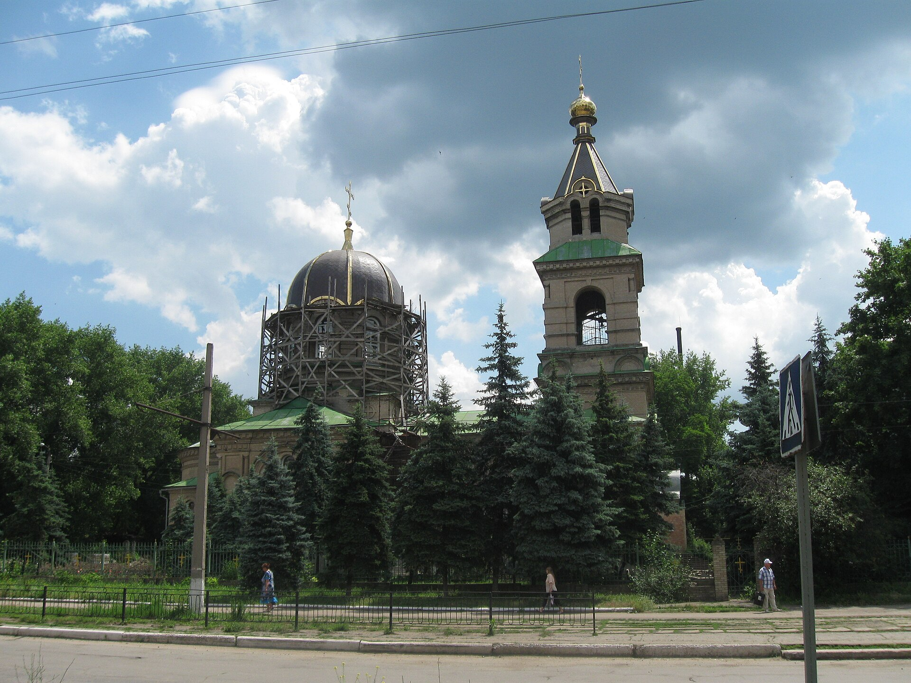
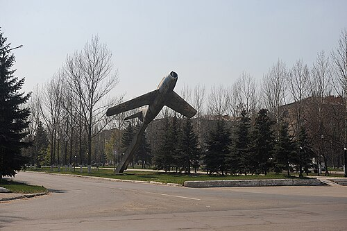
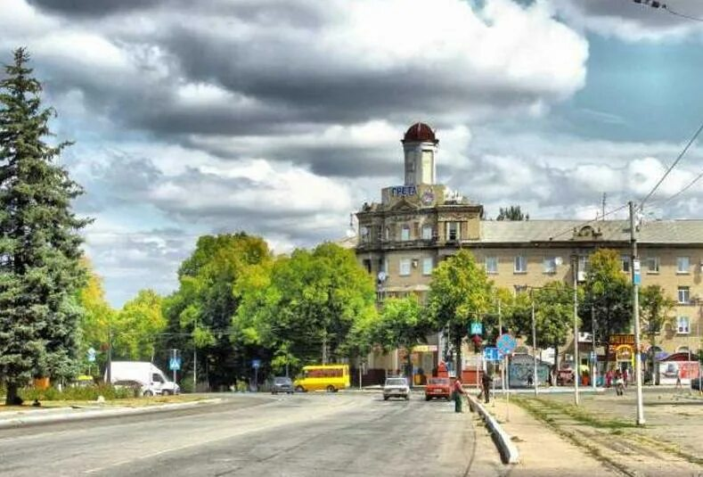
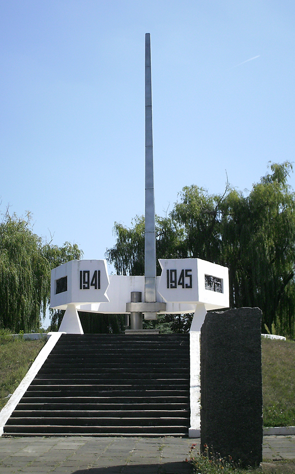
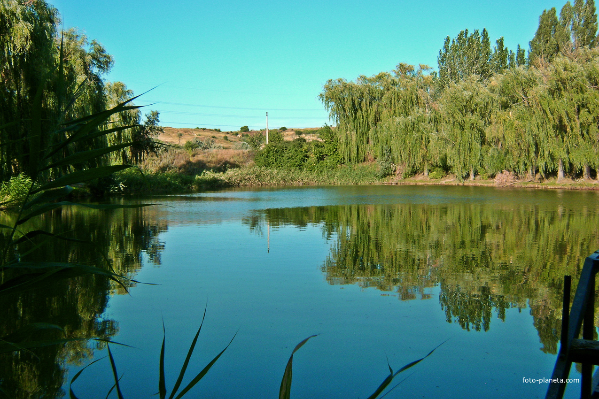
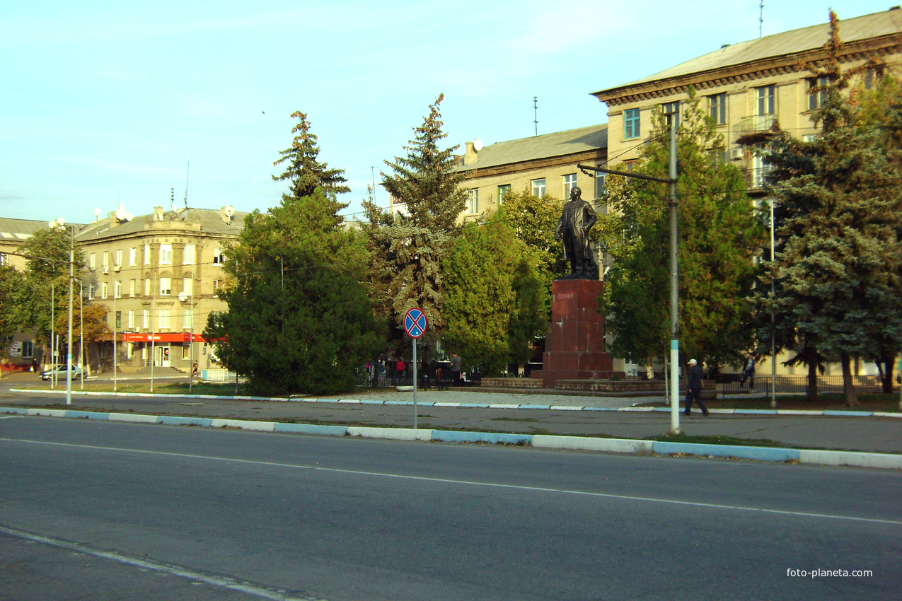
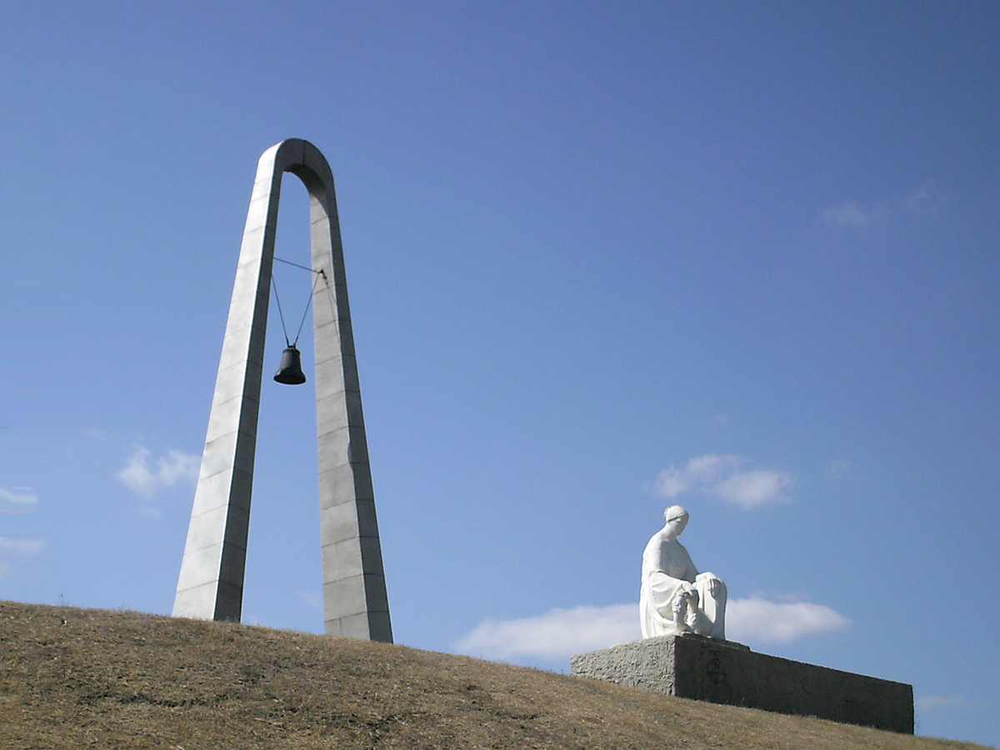
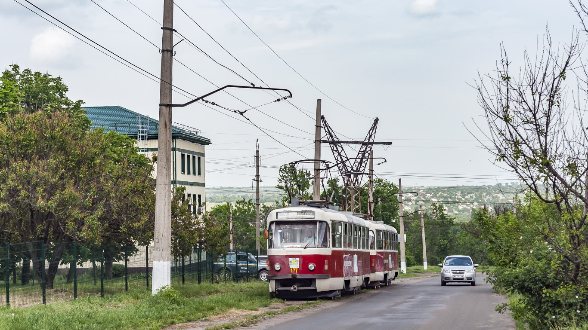

Дружковка — город в Донецкой области,
история которого связана с развитием промышленности,
железнодорожного транспорта и различных производственных
предприятий.
На протяжении многих лет город развивался как
промышленный населённый пункт. Формирование
Дружковки происходило постепенно: развивалась
инфраструктура, появлялись предприятия,
образовательные учреждения, культурные объекты
и жилые районы.
Важную роль в жизни города всегда играли люди.
Работники предприятий, учителя, врачи, спортсмены,
представители культуры и другие жители вносили
вклад в развитие Дружковки и формирование её
современного облика.
Город также известен своим расположением среди
природных территорий Донецкого региона. Окрестности
Дружковки представляют интерес с точки зрения
природного и исторического наследия.
Дружковка в фотографиях
Фотографии позволяют познакомиться с городом,
его улицами, архитектурой, природой и различными
городскими объектами.

Панорама Дружковки

Улицы города

Центральная часть города

Городская архитектура

Природа Донецкого региона

Городское пространство

Достопримечательности

Современный город
События и жизнь города
Современная жизнь Дружковки включает образовательные,
спортивные, культурные и общественные направления.
Даже в сложных условиях сохраняется интерес к истории
города, поддержанию социальных связей и развитию
различных инициатив.
Городские мероприятия
Городские мероприятия являются важной частью
общественной жизни. Они позволяют жителям
общаться друг с другом, участвовать в совместных
инициативах и сохранять связь с родным городом.
К таким мероприятиям могут относиться
образовательные встречи, общественные акции,
памятные даты, спортивные события и культурные
программы.
Городская жизнь
Образование
Образовательная сфера продолжает занимать
важное место в жизни Дружковской общины.
В городе действуют образовательные учреждения,
которые обеспечивают обучение детей и
подростков.
Современная система образования постепенно
адаптируется к новым условиям. Важное значение
имеют дистанционные форматы обучения,
взаимодействие педагогов с учащимися
и поддержка семей.
Образование
Общественная жизнь
Общественная жизнь города связана с
взаимодействием жителей, образовательных
учреждений, общественных организаций
и различных инициативных групп.
Особое значение имеет поддержание связи
между жителями Дружковки, в том числе теми,
кто временно находится за пределами города.
Общение и взаимопомощь помогают сохранять
чувство принадлежности к общине.
Общество
Спортивные мероприятия
Спорт традиционно является одним из
направлений общественной активности
Дружковки. В спортивной жизни участвуют
дети, подростки, молодёжь и взрослые.
Спортивные мероприятия имеют не только
физкультурное, но и социальное значение:
они способствуют общению, поддержанию
активности и формированию командного духа.
Спорт
Патриотический забег
Представители Дружковской общины приняли
участие во Всеукраинском патриотическом
забеге «Шаную воїнів, біжу за Героїв України».
Такие спортивные инициативы объединяют
физическую активность и общественную
составляющую, позволяя участникам принять
участие в памятном мероприятии.
Спорт и память
Поддержка спортсменов
Спортсмены из Дружковки продолжают
представлять город на различных соревнованиях.
Для молодых спортсменов важны не только
результаты, но и возможность продолжать
тренировки и развиваться.
Поддержка спортсменов помогает сохранять
спортивные традиции и мотивирует детей
и подростков заниматься физической культурой.
Спортивные достижения
Культурная жизнь
Культурная жизнь города связана с библиотеками,
творческими коллективами, образовательными
учреждениями и другими культурными площадками.
В рамках культурной деятельности могут
проводиться тематические встречи, выставки,
концерты, творческие занятия и мероприятия,
посвящённые памятным датам.
Культура
Историческая память
История Дружковки является важной частью
культурного наследия города. Сохранение
информации о прошлом позволяет жителям
узнавать больше о предыдущих поколениях.
Особое значение имеют сведения о развитии
промышленности, железной дороги, образования,
культуры и городской инфраструктуры.
История
Молодёжные инициативы
Молодёжь является важной частью будущего
города. Образовательные, спортивные и
творческие инициативы позволяют молодым
людям получать новые навыки и общаться
со сверстниками.
Особое значение имеют проекты, направленные
на развитие творческих способностей,
добровольчество, образование и здоровый
образ жизни.
Молодёжь
Социальная поддержка жителей
Значимое направление современной жизни
Дружковской общины — социальная поддержка
жителей. Она включает информационную,
консультационную и организационную помощь.
Подобная работа особенно важна для семей
с детьми, пожилых людей и других жителей,
которым требуется дополнительная помощь
в решении повседневных вопросов.
Социальная сфера
Разделы сайта
Используйте навигацию ниже, чтобы подробнее
познакомиться с различными сторонами истории
и жизни Дружковки.
История города
Основные этапы становления и развития
Дружковки, важные исторические события,
развитие промышленности и городской среды.